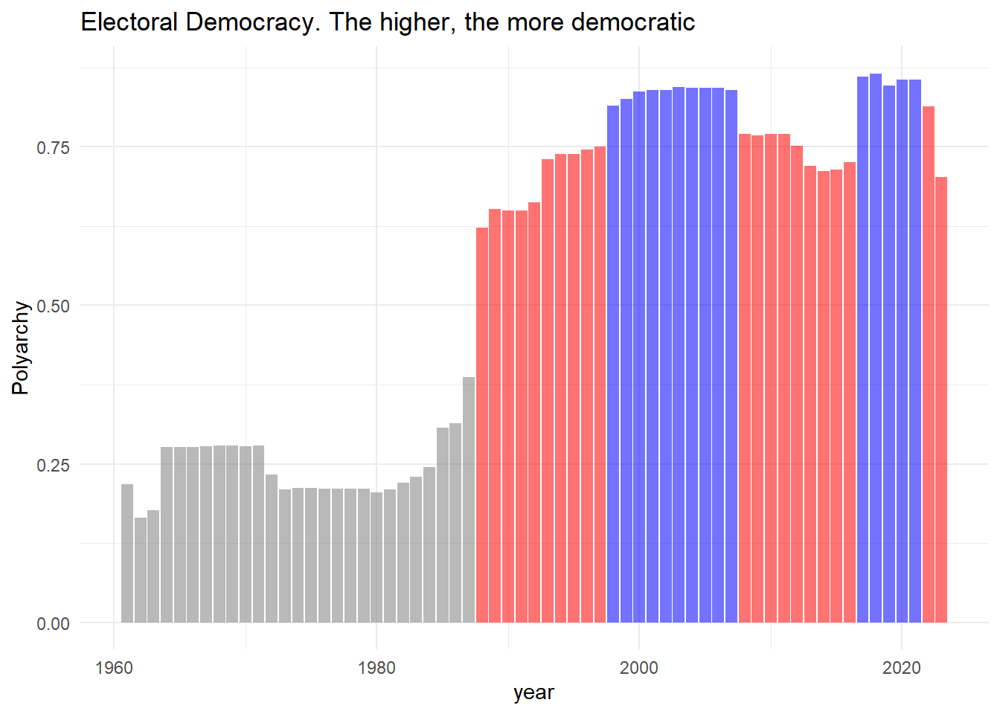

South Korea: The Case of A Long Democratization
Korea
The Shock
The latest insurrection attempt by Yoon Seok-yeol of South Korea stunned the world. It was widely believed that this affluent democracy with its cherished soft power would not be subject to a sudden political upheaval. After all, South Korea is far above the structural ‘thresholds’ that political scientists have long reported, be it Argentine GDP in 1975 or two decades of years beyond which a democratic regime might not fall.
Many have already offered extensive accounts on a litany of ways in which Yoon’s declaration of martial law was unconstitutional and constitutes, in essence, an insurrection, self-coup, and/or a treason. This and this as well as, you know, my own might be helpful explainers. It’s hard to miss the whiff of anger, fury, or terror in them.
There is one assumption common in these irrefutably rightful reactions–that South Korea was (nearing) to achieve the status of a consolidated democracy. Perhaps it was becoming a democracy so entrenched and irreversible that it is “the only game in town”. Indeed, since the democratization in 1987, the hard-earned democratic institutions and organized citizens prevailed over a series of crises–no way it could be suddenly derailed!
Unless, of course, that assumption was invalid. What if, the post-1987 Korea never amounted to democratic consolidation where any serious danger of collapse was reasonably negated? What if, instead, serious threats were always lurking around the society? What if, when those threats occasionally manifested themselves, it was only that they were not taken as threats and understood as something else?
And perhaps a more important to question to ask is: if the existence of these threats is verified, what needs to be done now in order to avoid repeating another insurrection?
Democratic Survival vs. Consolidation
Milan Svolik demonstrates that democratic consolidation and democratic survival are two different factors. Institutional factors (presidentialism and previous military dictatorship) make a transitional regime susceptible to reversal, but the immediate trigger is a recession. As in:
“[E]conomic development affects consolidation, and therefore whether a democracy faces a risk of a reversal, but it does not help us explain when a reversal might occur in transitional democracies. … [T]he eventual timing of reversals is associated only with economic recessions.”
This framework works neatly to explain what happened in South Korea.
The underlying factors in South Korea corresponding to presidentialism and previous military dictatorship.